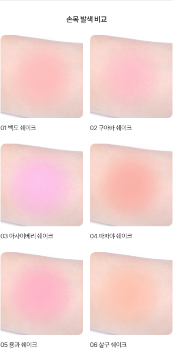
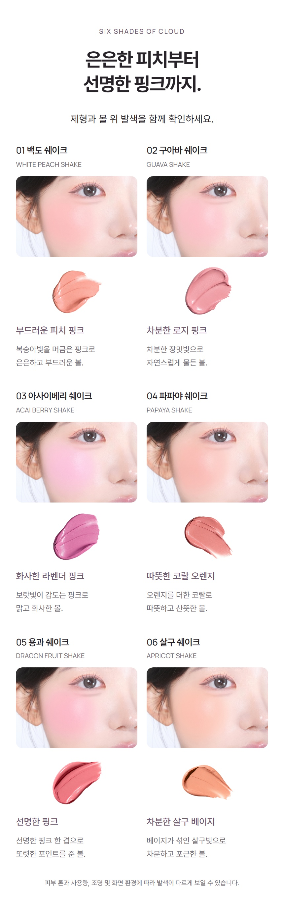
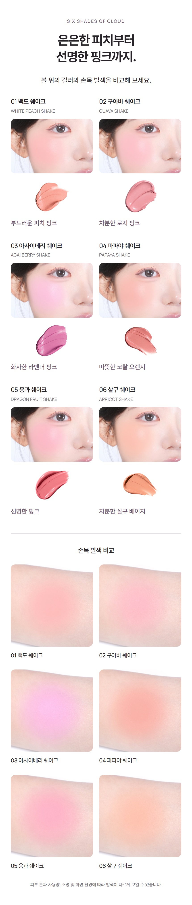
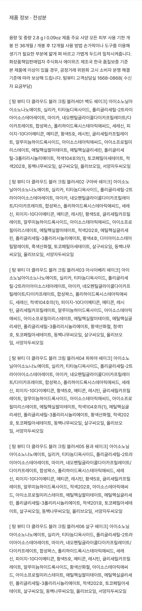
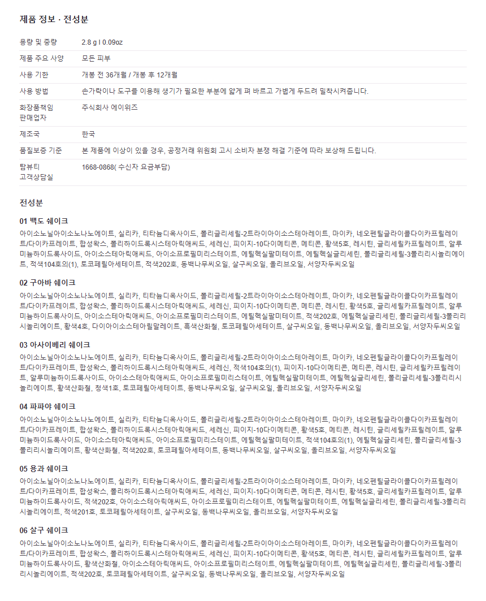
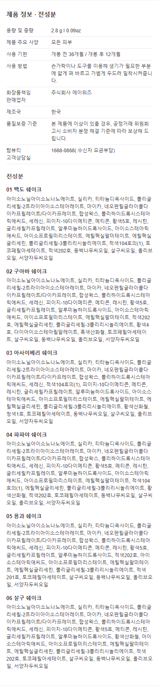

TAM BEAUTY · 2026.10.19 · 사용자 검토용
빠졌던 손목 발색을 복원하고,
큰 제품정보를 정돈했습니다.
이번에 바꾼 세 가지
- 손목 발색 원본 여섯 장을 추가했습니다. 볼·제형·손목 사진을 색상별로 한 번씩 사용합니다.
- 기존 2열 볼 사진 구성을 유지하고, 반복된 색 설명은 한 줄 톤 문구로 정리했습니다.
- 제품정보·전성분을 일반 HTML 텍스트로 분리했습니다. 모든 내용을 펼쳐 보여주며, 여섯 전성분 목록의 순서와 제품정보를 원문과 대조했습니다.
새 AI 발색이나 모델 구간은 추가하지 않았습니다. 카페24 실제 업로드는 하지 않았습니다.
크기 비교
| 항목 | 수정 전 | 수정 후 |
|---|---|---|
| 손목 발색 | 없음 | 원본 6장 |
| 발색 구간 · 860px | 2,758px | 4,050px |
| 제품정보 · 860px | 3,698px | 1,063px |
| 제품정보 · 390px | 약 1,677px | 약 1,675px |
PC에서는 제품정보가 약71% 짧아졌습니다. 모바일에서는 성분을 생략하거나 글씨를 더 축소하지 않아 길이가 거의 같습니다. 본문은 화면 크기와 관계없이12px 일반 텍스트로 표시됩니다.
복원한 손목 발색 · 모바일

원본 촬영 이미지를 사용했습니다. 피부 톤·사용량·조명·화면 환경에 따라 발색이 다르게 보일 수 있습니다.
발색 구간 전후


제품정보 전후 · PC 비율


수정 후 모바일 정보 보기

검증 범위
320·390·860px에서 이미지 표시와 가로 넘침을 확인했습니다. 전성분의 항목·순서와 제품정보는 공백 차이를 제외하고 원문과 일치합니다. 원본 손목 사진6개는 바이트가 같고, 제품정보는 스크립트·외부 폰트·접기 기능 없이 표시됩니다.
브라우저 검증이며 실제 카페24 관리자 저장이나 실물 휴대폰 검증은 아닙니다. 최종 디자인 수락은 사용자 검토 후 구분해 기록합니다. 검사 결과 · 판단과 독립 검토 원문
제작 전 Claude 교차검토
검토 완료. 결론부터: 플랜 B는 방향은 맞지만 2번(볼 사진 비율 변경)과 3번(12px·20% 목표)은 그대로 가면 안 됩니다. **블로커** - **볼 사진 원본 비율(1100/1137) 전환은 2026-10-19 확정 기준과 충돌.** 여섯 색상 카드는 Milky Cheek V12·Highlighter R33 패밀리 비율로 맞춘 것이 오너 승인 방향입니다. 현재 가로 크롭(05-detail.jpg)은 블러셔 발색 영역을 전부 담고 있고, 잘린 부분은 턱·입술이라 색 증거가 늘지 않습니다. 2번은 빼고 패밀리 비율 유지를 권합니다. - **12px + 전성분 전문 + 20% 이하는 동시에 불가.** 현재 08-detail.jpg 본문은 이미 430 기준 약 13px입니다. 12px로 줄이면 높이는 약 8%만 줄고 390px에서 10.9px, 320px에서 8.9px로 한글 획이 뭉개집니다. 길이의 원인은 글자 크기가 아니라 각 색상 앞의 긴 대괄호 접두어 6줄, 문단 사이 빈 줄 7개, 넓은 행간입니다. - **손목 발색 6장은 저대비 블러 처리된 사진.** 01·02·06, 04·05는 섬네일 크기에서 거의 같은 복숭아빛 원으로 보입니다. 390px 2열로 먼저 렌더링해 01·06이 구분되는지 눈으로 확인한 뒤 섹션을 만드세요. 구분이 안 되면 "색 증거 추가"가 아니라 "핑크 원 반복"으로 읽혀 오너 거절 사유가 됩니다. - **중복 판정 조건.** 손목·볼·제형은 증거 종류가 다르므로 색상당 1회씩이면 중복이 아닙니다. 단 손목 그리드가 제형 GIF 바로 뒤에 오면 제형 블롭이 이어지는 것처럼 보여 중복감이 생깁니다. **최적 배치 (색상 섹션 내부)** 1. 기존 헤드라인 하나만 유지. "피부 위에서 비교하는 여섯 컬러."를 두 번째 H2로 쌓지 말고 손목 그리드의 소제목 "손목 발색 비교"로 격하. 2. 여섯 볼 카드: 현재 패밀리 비율 유지, 제형 스와치는 카드 아래 1회, 톤 문구 한 줄만 남기고 두 줄 감성 설명 삭제. 안내 문장은 "손목·볼·제형 발색을 함께 확인하세요"로 한 번만. 3. 볼 카드 뒤에 손목 그리드 2열×3행, 1:1 중앙 크롭. 원본 3:4를 고집할 이유가 없습니다. 블롭은 중앙에 있어 정사각 크롭에 다 들어오고, 390px에서 약 180px 셀로 여섯 장이 한 화면(약 640px)에 들어와야 비교가 됩니다. 라벨은 "01 백도"처럼 번호+이름만, 색상 카드와 같은 거터·모서리. 4. 톤 가이드(13.png)는 이미지로 넣지 않음. 필요하면 가이드 위치가 명확한 03 "쿨", 04·06 "웜"만 라벨 뒤 한 단어로 붙이고, 01·02·05처럼 축 위치가 애매한 색은 생략. 5. 손목 사진은 샤픈·레벨 보정도 하지 마세요. 브랜드 블러가 들어간 원본이라 손대면 "무보정" 설명 자체가 거짓이 됩니다. **정보 이미지 최소 글자 크기** - 430 캡처 기준 본문·전성분 13px 이상(390 표시 11.8px), 색상 소제목 14px, 행간 1.5. 12px은 하한이 아니라 경계 밖입니다. - 접두어를 "01 백도 쉐이크" 소제목으로 교체, 빈 줄 제거, 사양을 라벨 70px짜리 한 열 행 7개로 정리하면 글자를 줄이지 않고 약 30% 단축됩니다. 손목 그리드로 전체가 길어지는 것까지 포함해 약 20~22%가 현실적 목표입니다. 20% 미만을 약속하지 마세요. - 전성분 여섯 목록을 "공통 성분 + 색상별 차이"로 합치지 마세요. 03은 적색104호의(1)이 앞쪽에 오는 등 색상별 함량 순서가 다릅니다. - 작은 한글 텍스트는 JPG 압축에서 깨지므로 정보 이미지는 PNG로 저장. **피할 문구** - 지속 시간, 터치 횟수, 비포/애프터, "뭉침 없음", "한 번에 발색". - "무보정", "실제 피부톤 그대로", "모든 피부톤 어울림", "퍼스널컬러 진단". - "비건 인증", "저자극 테스트 완료", "식약처 등록 전성분" 등 인증·검증 단어. 원본 사실 표기만. - 손목 사진에 크림-투-파우더 변화 설명. 동일 조건 증거가 아닙니다. - 05-detail의 "조명·화면 환경에 따라 다를 수 있음" 각주는 손목 그리드까지 포함하도록 섹션 끝에 유지. 이 검토는 참고 의견이며 오너 수락이 아닙니다.
수정본 Claude 재검토
검토 완료. 지정 6개 파일만 읽었고, 추가로 필요한 항목은 없습니다. 편집·에이전트 호출 없음. **결론: MUST 수정 항목 없음.** 오너 피드백 두 가지 중 발색 근거는 해결, 정보 과대는 PC에서 해결되었고 모바일 길이는 동일합니다. Cafe24 저장은 미검증 경계로 남습니다. 오너 시각 수락은 추론하지 않으며 qa.json의 pending 그대로입니다. **손목 발색 비교 · arms-390.png, 05-detail.jpg** - 6색 모두 육안 구분됩니다. 01 피치 핑크, 02 로지 핑크, 03 라벤더, 04 코랄 오렌지, 05 선명 핑크, 06 살구 베이지로 위쪽 볼·제형 카드의 색 방향과 일치합니다. - 2열 가로 볼 프레임은 유지되고, 손목 6장은 정사각 2열 그리드에 1회만 노출됩니다. 발색 원이 프레임에 잘린 경우 없음. - 1행과 2~3행의 피부 톤·조명 차이는 원본 촬영 차이이며 보정 금지 범위이므로 문제 아님. - 캡션 크기는 기존 래스터 캡션 관례와 같고 390 캡처에서 판독 가능합니다. - 하단 주석 "피부 톤과 사용량, 조명 및 화면 환경에 따라…"는 성능 주장 아닌 표준 고지라 문제 없음. **정보 섹션 · product-information.html, after-info-390/860.png** - 계층은 15/14/13/12px에 굵기 600으로 구분되어 읽힙니다. 표 라벨열 100px, 긴 값 줄바꿈 정상, 320에서 overflow 없음. - 본문 색 대비 충분. 전성분 6개 목록 스팟체크에서 잘림·중복 없음. 원문 대조는 테스트 통과를 신뢰합니다. - 860에서 한 줄 약 65자로 길지만 전성분은 스캔용 목록이라 허용 범위입니다. | 뷰포트 | 정보 높이 | 페이지 비중 | |---|---|---| | 860 | 3698 → 1062.5px | 31% → 10% | | 390 | 1677 → 1674.5px | 변화 없음 | 모바일 단축은 주장할 수 없습니다. 오너의 "너무 크다"가 모바일 길이를 뜻했다면 미해결이며, 전성분 전체 노출과 JS·아코디언 금지 하에서는 더 줄일 방법이 없습니다. 남은 선택지는 전성분을 Cafe24 기본 상품정보제공고시 필드로 옮기는 것이고 이는 오너의 범위 결정입니다. **래스터 12px과 네이티브 12px의 차이** - 래스터 12px은 430 캔버스를 320~390으로 축소해 실효 9~11px이 되고 리샘플링으로 흐려지며, 확대 시 깨지고 선택·복사·검색·스크린리더가 불가합니다. - 네이티브 12 CSS px은 모든 뷰포트에서 12px을 유지하고 기기 DPR로 선명하게 렌더되며 핀치줌에도 선명합니다. 국내 쇼핑몰 상품정보·전성분 관례인 11~12px 범위입니다. - 따라서 법정·참고 정보로는 수용 가능합니다. 설득 본문이라면 부족하지만 이 섹션은 해당하지 않습니다. **검증 경계** - Cafe24 에디터가 inline style, scope, data 속성, h2/h3를 보존하는지, 스킨 CSS의 !important 캐스케이드, 모바일 상세설명 별도 필드 여부, 실기기 12px 렌더는 모두 미검증입니다. - 업로드 재개 시 HTML 모드 붙여넣기 후 PC·모바일에서 표 렌더, overflow, 전성분 원문 대조를 확인해야 합니다. 지금 업로드를 요구하지 않습니다. **선택 사항, 필수 아님, 재설계 아님** - 표 라벨 굵기 500은 한글 폰트에 중간 굵기가 없어 390 캡처에서 값과 동일하게 보입니다. 600으로 올리면 구분이 생깁니다. - Cafe24 PC 상세 컨테이너가 860보다 넓으면 줄이 더 길어집니다. 정보 컨테이너에 max-width 약 760px을 두면 방지됩니다. - "2.8 g I 0.09oz"의 I와 "( 수신자"의 띄어쓰기는 원문 그대로라면 유지하고, 오너 확인 시에만 정리합니다.